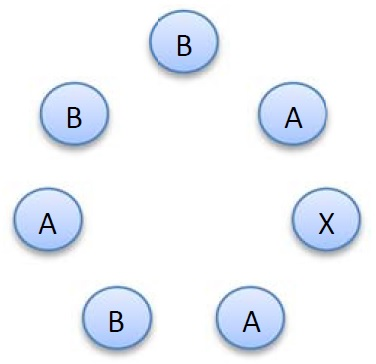
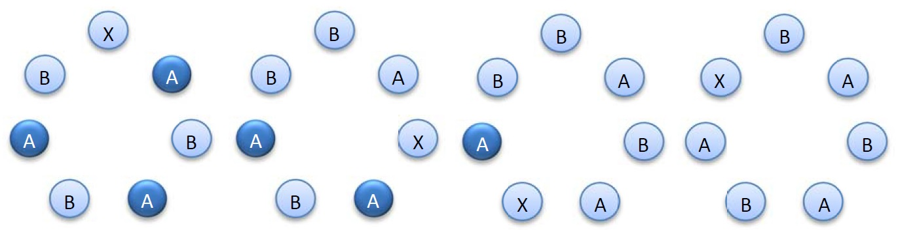

一个密钥是一个长度为 $n = 2 k + 1$ 的字符串，它包含 $1$ 个字母 $\texttt X$、$k$ 个字母 $\texttt A$ 和 $k$ 个字母 $\texttt B$。例如 $k = 3$ 时，$\texttt{BAXABAB}$ 就是一个密钥。
如下图所示，可以按顺时针顺序把这 $2 k + 1$ 个字母排成一个圈：
在 $k$ 个字母 $\texttt A$ 中，有一部分可以定义为 "强的"。
具体来说，从 $\texttt X$ 出发顺时针走到某个 $\texttt A$ 时，如果途中 $\texttt A$ 的数目严格多于 $\texttt B$ 的数目，则称此字母 $\texttt A$ 为强的。
对于上面的例子来说，顺时针方向从字母 $\texttt X$ 数起第 $1$ 个和第 $2$ 个字母 $\texttt A$ 是强的，而第 $3$ 个字母 $\texttt A$ 不是强的。
一个密钥的特征值就是其中包含的强的字母 $\texttt A$ 的个数。
天才小朋友 KT 给出了一个结论：
假设 $k$ 个字母 $\texttt A$ 所在的位置已经固定，但是剩下的 $k$ 个 $\texttt B$ 和 $1$ 个 $\texttt X$ 的位置是未知的。(注意，满足这样要求的密钥一共有 $k + 1$ 个，因为字母 $\texttt X$ 还剩下 $k + 1$ 个可能的位置)
可以证明：所有这 $k + 1$ 个可能的密钥的特征值是各不相同的，它们恰好为 $0, 1, 2, \cdots, k$。
下图是一个具体的示例，从左到右的四个子图中分别有 $3$ 个，$2$ 个，$1$ 个，$0$ 个字母 $\texttt A$ 是强的。
类似地，如果固定 $k$ 个字母 $\texttt B$ 的位置，那满足条件的所有 $k + 1$ 个密钥的特征值也各不相同，恰好为 $0, 1, \cdots, k$。
现在你需要解决以下三个问题：
注意：字符串的 $2k+1$ 个字母的位置由 $1$ 到 $2k + 1$ 编号。
第一行包含一个整数 $k$ ($k \leq 10^7$)，意义如题所述。
第二行包含一个整数 $seed$ ($1 \leq seed \leq 10000$)，这个数将用于生成一个 $k$ 元集合 $P$。
第三行包含一个整数 $S$ ($0 \leq S \leq k$)，意义如题所述。
$P$ 将通过某种随机方式生成 (具体见下方代码)。在数组 p[] 中，若 p[i] == 0，表示 $i$ 不属于集合 $P$，否则，$i$ 属于集合 $P$。
输出三行，每行一个整数，依次对应问题描述中的三个子问题的答案。
#include <bits/stdc++.h>
#define N 20030731
typedef unsigned short u16;
u16 seed;
int n, k, S;
int cnt = 0;
int p[N], w[N / 2], buf[N], res[N / 2];
inline u16 next() {return seed = (seed * 12321) ^ 9999;}
int main() {
int i, t = 0;
scanf("%d%hu%d", &k, &seed, &S); n = k * 2 + 1;
for (i = 1; i <= n; ++i) t += p[i] = next() >> 7 & 1;
for (i = 1; t > k; ++i) t -= p[i], p[i] = 0;
for (i = 1; t < k; ++i) t += !p[i], p[i] = 1;
for (i = 1; i <= n; ++i)
if (t = p[i] |= p[i] - 1, p[i] += p[i - 1], !~t)
w[++cnt] = i, ++buf[p[i] + k];
for (i = 1; i <= n; ++i) buf[i] += buf[i - 1];
for (i = cnt; t = w[i], i; --i) res[buf[p[t] + k]--] = t;
printf("%d\n%d\n%d\n", res[cnt], res[cnt - S], res[S + 1]);
return 0;
}